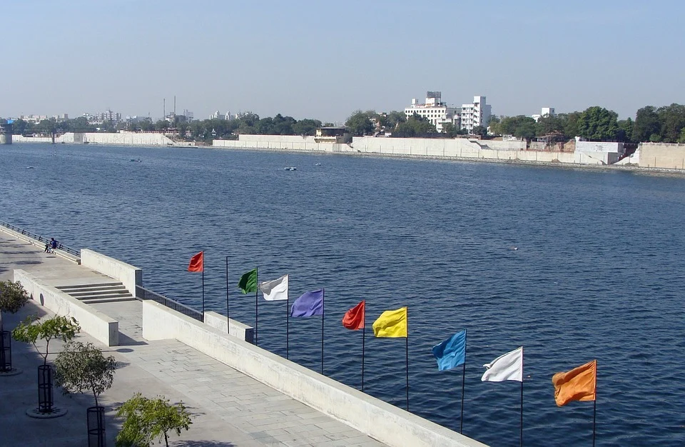

Ahmedabad is the largest city and former capital of the Indian state of Gujarat. It is the administrative headquarters of the Ahmedabad district and the seat of the Gujarat High Court. Ahmedabad's population of 5,633,927 (as per 2011 population census) makes it the fifth-most populous city in India, and the encompassing urban agglomeration population estimated at 6,357,693 is the seventh-most populous in India. Ahmedabad is located on the banks of the Sabarmati River, 23 km (14 mi) from the state capital Gandhinagar, which is its twin city.
Ahmedabad has emerged as an important economic and industrial hub in India. It is the second-largest producer of cotton in India, and its stock exchange is the country's second oldest. Cricket is a popular sport in Ahmedabad. A newly built Sardar Patel Stadium at Motera can accommodate 110,000 spectators. The effects of liberalisation of the Indian economy have energised the city's economy towards tertiary sector activities such as commerce, communication and construction. Ahmedabad's increasing population has resulted in an increase in the construction and housing industries resulting in recent development of skyscrapers.
In 2010, Ahmedabad was ranked third in Forbes's list of fastest growing cities of the decade. In 2012, The Times of India chose Ahmedabad as India's best city to live in. As of 2017, Ahmedabad's estimated gross domestic product was $68 billion (PPP dollars).